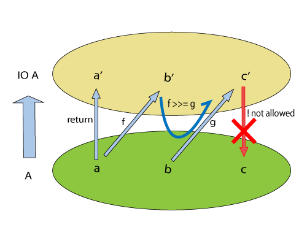

开始学习haskell
一直想学学习一下函数式编程语言 ，那么就从haskell入手好了，首先记录一些资料在这里:
- 一个haskell的博客
- 《Haskell趣学指南》 GitHub
- 用haskell实现scheme
- 《Real World Haskell》(译版)
- Warp : Haskell 的高性能 Web 服务器(译文)
- Yesod Web框架
- 24 Days of Hackage 2012
- 24 Days of Hackage 2013
- 24 Days of GHC Extensions
- Haskell 98 Language and Libraries The Revised Report
- Monad 最简介绍 
Write Yourself a Scheme in 48 Hours源代码如下：
{-
parser.hs
Author: aducode@126.com
Date: 2015-06-29
-}
module Main where
import Control.Monad
import Control.Monad.Error
import System.Environment
import Text.ParserCombinators.Parsec hiding (spaces)
data LispVal = Atom String
| List [LispVal]
| DottedList [LispVal] LispVal
| Number Integer
| String String
| Bool Bool
unwordsList::[LispVal] -> String
unwordsList = unwords.map showVal
showVal::LispVal -> String
showVal (Atom name) = name
showVal (String str) = "\"" ++ str ++ "\""
showVal (Number num) = show num
showVal (Bool True) = "#t"
showVal (Bool False) = "#f"
showVal (List contents) = "(" ++ unwordsList contents ++ ")"
showVal (DottedList head tail) = "(" ++ unwordsList head ++ "." ++ showVal tail ++")"
instance Show LispVal where
show = showVal
data LispError = NumArgs Integer [LispVal]
| TypeMismatch String LispVal
| Parser ParseError
| BadSpecialForm String LispVal
| NotFunction String String
| UnboundVar String String
| Default String
showError::LispError -> String
showError (UnboundVar message varname) = message ++ ": " ++ varname
showError (BadSpecialForm message form) = message ++ ": " ++ show form
showError (NotFunction message func) = message ++ ": " ++ show func
showError (NumArgs expected found) = "Expected " ++ show expected ++ " args: found values " ++ unwordsList found
showError (TypeMismatch expected found) = "Invalid type: expected " ++ expected ++ ", found " ++ show found
showError (Parser parseErr) = "Parse error at " ++ show parseErr
instance Show LispError where
show = showError
instance Error LispError where
noMsg = Default "An error has occurred"
strMsg = Default
type ThrowsError = Either LispError
trapError action = catchError action (return.show)
extractValue::ThrowsError a -> a
extractValue (Right val) = val
main::IO ()
main = do
args <- getArgs
evaled <- return $ liftM show $ readExpr (args !! 0) >>= eval
putStrLn $ extractValue $ trapError evaled
spaces::Parser ()
spaces = skipMany1 space
symbol::Parser Char
symbol = oneOf "!$%&|*+-/:<=?>@^_~#"
readExpr::String->ThrowsError LispVal
readExpr input = case parse parseExpr "lisp" input of
Left err-> throwError $ Parser err
Right val -> return val
eval::LispVal ->ThrowsError LispVal
eval val@(String _) = return val
eval val@(Number _) = return val
eval val@(Bool _) = return val
eval (List [Atom "quote", val]) =return val
eval (List [Atom "if", pred, conseq, alt]) = do
result <- eval pred
case result of
Bool False -> eval alt
otherwise -> eval conseq
eval (List (Atom func:args)) = mapM eval args >>= apply func
eval badForm = throwError $ BadSpecialForm "Unrecognized special form" badForm
apply::String->[LispVal]->ThrowsError LispVal
apply func args = maybe (throwError $ NotFunction "Unrecognized primitive function args" func) ($ args) (lookup func primitives)
primitives::[(String, [LispVal] -> ThrowsError LispVal)]
primitives = [
("+", numericBinop (+)),
("-", numericBinop (-)),
("*", numericBinop (*)),
("/", numericBinop div),
("mod", numericBinop mod),
("quotient", numericBinop quot),
("remainder", numericBinop rem),
("=", numBoolBinop (==)),
("<", numBoolBinop (<)),
(">", numBoolBinop (>)),
("/=", numBoolBinop (/=)),
(">=", numBoolBinop (>=)),
("<=", numBoolBinop (<=)),
("&&", boolBoolBinop (&&)),
("||", boolBoolBinop (||)),
("string=?", strBoolBinop (==)),
("string?", strBoolBinop (>)),
("string<=?", strBoolBinop (<=)),
("string>=?", strBoolBinop (>=)),
("car", car),
("cdr", cdr),
("cons", cons),
("eq?", eqv),
("eqv?", eqv)]
numericBinop::(Integer->Integer->Integer) -> [LispVal]->ThrowsError LispVal
numericBinop op singleVal@[_] = throwError $ NumArgs 2 singleVal
numericBinop op params = mapM unpackNum params >>= return . Number . foldl1 op
boolBinop::(LispVal -> ThrowsError a) -> (a->a->Bool) -> [LispVal] -> ThrowsError LispVal
boolBinop unpacker op args = if length args /= 2
then throwError $ NumArgs 2 args
else do
left <- unpacker $ args !! 0
right <- unpacker $ args !! 1
return $ Bool $ left `op` right
numBoolBinop = boolBinop unpackNum
strBoolBinop = boolBinop unpackStr
boolBoolBinop = boolBinop unpackBool
unpackNum::LispVal->ThrowsError Integer
unpackNum (Number n) = return n
unpackNum (String str) = let parsed = reads str in
if null parsed
then throwError $ TypeMismatch "number" $ String str
else return $ fst $ parsed !! 0
unpackNum (List [n]) = unpackNum n
unpackNum notNum = throwError $ TypeMismatch "number" notNum
unpackStr::LispVal -> ThrowsError String
unpackStr (String s) = return s
unpackStr (Number s) = return $ show s
unpackStr (Bool s) = return $ show s
unpackStr notStr = throwError $ TypeMismatch "string" notStr
unpackBool::LispVal->ThrowsError Bool
unpackBool (Bool b) = return b
unpackBool notBool = throwError $ TypeMismatch "boolean" notBool
car::[LispVal] -> ThrowsError LispVal
car [List (x:xs)] = return x
car [DottedList (x:xs) _] = return x
car [badArgs] = throwError $ TypeMismatch "pair" badArgs
car badArgList = throwError $ NumArgs 1 badArgList
cdr::[LispVal] -> ThrowsError LispVal
cdr [List (x:xs)] = return $ List xs
cdr [DottedList (_:xs) x] = return $ DottedList xs x
cdr [DottedList [xs] x] = return x
cdr [badArg] = throwError $ TypeMismatch "pair" badArg
cdr badArgList = throwError $ NumArgs 1 badArgList
cons::[LispVal]->ThrowsError LispVal
cons [x1, List []] = return $ List [x1]
cons [x, List xs] = return $ List $ [x] ++ xs
cons [x, DottedList xs xlast] = return $ DottedList ([x]++xs) xlast
cons [x1, x2] = return $ DottedList [x1] x2
cons badArgList = throwError $ NumArgs 2 badArgList
eqv::[LispVal] -> ThrowsError LispVal
eqv [(Bool arg1), (Bool arg2)] = return $ Bool $ arg1 == arg2
eqv [(Number arg1), (Number arg2)] = return $ Bool $ arg1 == arg2
eqv [(String arg1), (String arg2)] = return $ Bool $ arg1 == arg2
eqv [(Atom arg1), (Atom arg2)] = return $ Bool $ arg1 == arg2
eqv [(DottedList xs x), (DottedList ys y)] = eqv [List $ xs ++ [x], List $ ys ++ [y]]
eqv [(List arg1), (List arg2)] = return $ Bool $ (length arg1 == length arg2) && (and $ map eqvPair $ zip arg1 arg2)
where eqvPair (x1, x2) = case eqv [x1, x2] of
Left err -> False
Right (Bool val)->val
eqv [_, _] = return $ Bool False
eqv badArgList = throwError $ NumArgs 2 badArgList
parseString::Parser LispVal
parseString = do
char '"'
x<-many (noneOf "\"")
char '"'
return $ String x
parseAtom::Parser LispVal
parseAtom = do
first <- letter <|> symbol
rest <- many (letter <|> digit <|> symbol)
let atom = [first] ++ rest
return $ case atom of
"#t" -> Bool True
"#f" -> Bool False
otherwise -> Atom atom
parseNumber::Parser LispVal
parseNumber = liftM (Number . read) $ many1 digit
parseList::Parser LispVal
parseList = liftM List $ sepBy parseExpr spaces
parseDottedList::Parser LispVal
parseDottedList = do
head <- endBy parseExpr spaces
tail <- char '.' >> spaces >> parseExpr
return $ DottedList head tail
parseQuoted::Parser LispVal
parseQuoted = do
char '\''
x <- parseExpr
return $ List [Atom "quote", x]
parseExpr::Parser LispVal
parseExpr = parseAtom
<|> parseString
<|> parseNumber
<|> parseQuoted
<|> do
char '('
x <- (try parseList) <|> parseDottedList
char ')'
return x
haskell学习总结